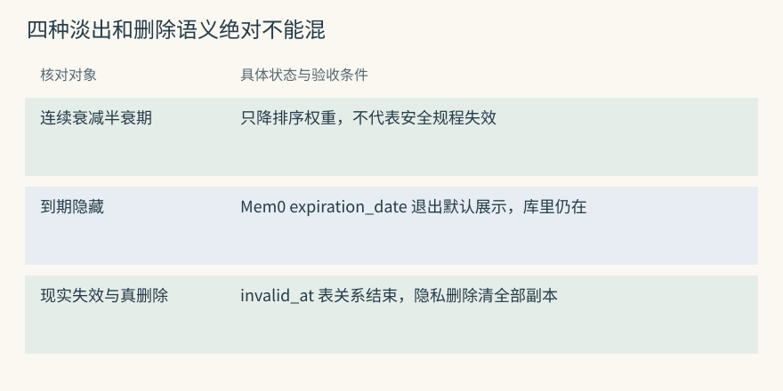
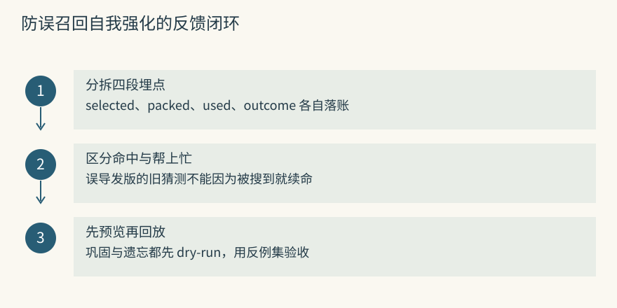
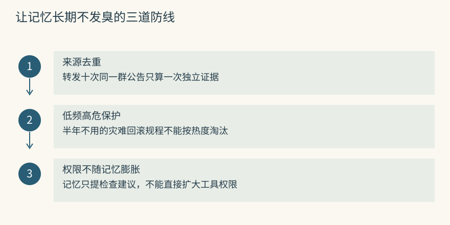

巩固、遗忘与自我改进
跑了半年之后，为什么记忆库越用越傻？
很多团队刚接上记忆系统那两周觉得特别惊艳，结果跑了半年发现助手越来越蠢：
- 同样一条“发
payment-gateway前查幂等键”，因为每次发版复盘都提一遍，库里攒了十几张说法大同小异的卡片，一搜 Top-5 全是重复废话，把真正不同的例外全挤没了； - 三个月前修掉的临时 workaround、早就下线的老接口配置，依然靠高字面相似度霸占着搜索前排；
- 更要命的是，某条写错了根因的旧猜测因为标题写得像，每次都被搜出来，而系统只要“搜到就给它加活跃度”，结果错误记忆越错越顽固！
解决“记忆发臭”的药方，就是生命周期治理：把零散经历提炼成干净规程（巩固）、让过时噪音有序退场（遗忘）、用真实任务结果而不是“命中次数”来校准记忆（反馈闭环）。
巩固（Consolidation）：压缩冗余，但别把不同根因强行揉成假规律
举个研发里特别常见的反面教材：过去一个季度，payment-gateway 上线被拦下来三次：
- 第 1 次：幂等键 TTL 配短了；
- 第 2 次：改错了环境变量文件，发到了预发集群；
- 第 3 次：幂等键配置没问题，但缺少压测报告审批。
如果你用粗糙的聚类器把这三次“发版失败”揉成一条总结——“以后 payment-gateway 每次发版失败都是因为幂等键问题，直接重新生成幂等键配置”——那就酿成了两个经典压缩翻车：
- 强行归因：三次根本不是同一个原因，最多只能汇总成清单“发版前分别核对幂等键、目标环境与压测审批”，每条各自挂回自己的原始事故单；
- 动词悄悄扩权：原话只是“核对幂等键配置”（只读检查），摘要一不小心压成了“每次发版前重写幂等键配置”（危险写操作）。字面相似度极高，副作用却放大了十倍！
同时还要提防**“伪独立证据”**：如果老张在飞书群里发了一份通知，被四个转发机器人各转了一遍，巩固器如果傻数来源条数，就会把 1 次通知误算成 5 次独立验证。巩固前必须先追共同源事件，合并重复表达但保住真实来源独立性。
源码与 2026-11 新进展：Mem0 Dream 与 Graphiti 摘要边界（选读）
Mem0：开源仍靠外层治理，托管侧 2026-11 上线了 Dream 引擎
我们前面讲过，Mem0 本地开源同步路径默认是 ADD-only，不会定期自己做高层巩固；哪怕用 memory_type="procedural_memory" 总结轨迹，产出的也只是一段待审核的文本草稿，并不会自动跑反例回放。
不过在 2026 年 10—11 月，Mem0 在托管 Pro / Enterprise 平台侧正式上线了后台异步巩固引擎 Mem0 Dream——专门用来在后台合成高层模式、合并重复事实，并把过时信息标记为 superseded。这恰好直接回应了 Mem0 开源版缺少后台 sleep 巩固的短板。选型时一定要分清：Dream 是托管云能力，自建 OSS 依然需要你自己写巩固脚本和版本治理。
Graphiti：重复边能聚来源，但不等于图不会膨胀
Graphiti 遇到重复事实时会复用旧边并往 episodes 里追加来源 UUID，节点 summary 也会汇总新信息。但长期跑下来，大量一次性临时任务照样会让图越长越胖；而且 episodes 列表长度只代表“提过几次”，不代表“验证成功几次”。
四种“淡出与删除”语义，绝对不能混为一谈
工程里最容易吵架的一个词就是“遗忘（Forgetting）”。一定要把下面四种动作彻底拆开，它们干的根本不是一件事：

- 连续衰减（半衰期降权）：比如 Hippo Memory 用
strength = initial * 0.5^(elapsed / half_life)调节排序权重——初始 0.8、半衰期 10 天，第 10 / 20 / 30 天分别降到 0.4 / 0.2 / 0.1。- 边界：它只表示“最近少用，排序往后挪”，绝不代表事实变假！一条半年才用一次的“支付核心灾难回滚手册”，必须设置
pinned或高危保护，绝不能因为访问少就自动淡出！ - 参数换算坑：不同框架的衰减公式不能直接抄天数。Hippo 用
0.5^(age / half_life)，而 MCP Memory Service 的 decay.py 用的是自然指数exp(-age / retention_period)。想要第 10 天正好减半，retention_period得设成10 / ln(2) ≈ 14.43天，设成 10 天在第 10 天会掉到0.368。
- 边界：它只表示“最近少用，排序往后挪”，绝不代表事实变假！一条半年才用一次的“支付核心灾难回滚手册”，必须设置
- 到期隐藏（TTL / Expiration）：比如 Mem0 的
expiration_date，到点后自动退出默认搜索结果（传show_expired还能看），适合活动通知、临时值班表，但正文还留在库里。 - 现实失效（Invalidation）：比如 Graphiti 的
invalid_at，表示这条关系在客观世界里结束了（老张不再是 on-call）。只能由真实变更事件触发，绝不能因为“三个月没人问”就给它写invalid_at！ - 合规物理删除（Erasure）：用户注销或法规要求清除敏感信息。归档、降权、写
valid_to统统不算删除！你必须顺着血缘图把原文、向量索引、图边、实体摘要、SQLite 历史表、Git 提交历史和备份恢复重放全链路扫干净。
切断“误召回自我强化”的死循环
回忆一下第 4 章 mini_memory.py 里特意展示的那个简化：只要 recall() 搜到了一条记录，就立刻给它 access_count + 1。
如果在生产系统里也这么干，会发生极其荒诞的死循环：一条错误的旧猜测因为关键词撞车，每轮都被搜出来 → 每搜出来一次热度就涨一截、半衰期就延长一点 → 下次排名更高、更难退场！
破局的唯一办法是把检索到任务的链路拆成四个独立埋点：

selected：记忆库把它返回在了候选列表里；packed：组装器真的把它装进了最终 Prompt（没被预算跳过）；used：回答或工具调用真的参考了它；outcome：这次任务最终到底成功了还是翻车了，以及成功是不是真的归功于它（如果发版成功是因为人工半路改了参数，别把功劳全记在记忆头上）。
另外记住：如果一条记忆本身是错的，不要只给它打个负分等它慢慢衰减！ 负分在高相似度查询里照样可能被捞出来，错误事实必须显式纠正或替代。
自我改进的安全底线：记忆永远不能自己给自己提权
很多项目宣传“Agent 能自我学习、自动把经验沉淀成技能”，落地时必须按影响面分好闸门：
- 低风险自动：原始日志落盘、带“待核验”标签的候选事实提取；
- 中风险先预览：巩固合并和低价值清理一律先
dry-run产出变更报告，确认没有误合并不同根因、没有误伤pinned高危规程； - 高风险必须回放 + 审批：把零散经验升级成长期发布规程或系统核心规则前，必须拿正反例一起回放——比如同时测“配置合规应放行”“幂等键过期应拦住”“演示环境
dry-run不得真发版”“其他服务不受干扰”。
最关键的一条底线：记忆内容永远不能扩大工具权限。 哪怕一条巩固后的规程写着“发现配置不对就自动修改线上生产库”，只要工具层没给写权限，宿主确定性代码就必须把它死死拦住。
实现笔记：各项目的巩固与遗忘到底改了什么状态（选读）
把生命周期拆成四条彼此正交的状态机，远远好过用一个模糊的“分数”包办一切：
处理状态：received → processed | failed_waiting_retry
证据等级：reported（转述/猜测） → verified（核实） | retracted（撤回）
现实效力：active → superseded（已被替代）
存储保留：online → archived（归档） → erased（物理清除）看看各开源项目里的真实落点，验收时别张冠李戴：
- MCP Memory Service：forgetting.py 会按质量、闲置时间和保护规则把候选分别标为
archived、compressed、deleted或skipped；v13.0.0 还给整个巩固过程加上了consolidation_started / consolidation_phase / consolidation_completed阶段事件上报，方便盯紧每一步到底做了什么。 - Cognee：stages.py 把
improve拆成带 gate 和 watermark 游标的多个阶段（反馈权重、会话 QA、Trace 蒸馏等），某个开关没开会被跳过，返回成功不等于所有阶段都跑了。 - Hippo Memory：把指数衰减、召回强化、
applyOutcome反馈与sleep巩固分开；值得一提的是，Hippo 作者在仓库里公开记录并撤回了此前无法稳定复现的早期sequential-learning增幅数据——这种诚实态度非常值得借鉴：任何反馈增强机制都必须用你自己的业务增长池做独立消融验证。 - MemoryOS / A-MEM：前者靠热度把页面搬进长期层，后者在写入时修改邻居笔记的描述和链接——它们改变的是层级和发现线索，并不自带事实核验。
动手检查
研发助手库里同时躺着四条记录：
- 已复盘确认的
payment-gateway幂等键检查规程； - 今天下午演示环境只跑
dry-run的临时约束； - 某人随口猜的“怀疑是 Redis 连接池抖动”且尚未抓包确认；
- 禁止把
PROD_API_KEY发送到外网的硬性安全策略。
请分别说明它们应该怎么设置过期、降权、纠正或保护策略。如果第 2 条记录已经“归档”退出了常规搜索，后来客户要求删除与本次演示相关的全部私有记录，归档后的它还需要处理吗？
答案提示：第 1 条设为长期有效并保护（只随正式架构变更版本替代）；第 2 条绑定任务结束即退出；第 3 条标为待核验假设，绝不因被搜到而自动升格，证伪后直接撤回；第 4 条根本不该靠记忆热度维持，必须写死在宿主确定性安全层！归档只是隐藏展示，正文仍在磁盘里，收到隐私删除请求时必须把归档、摘要、向量、历史表和日志副本一并清干净。

项目对照速查（选读）
本章对照结论
| 项目 | 生命周期机制真正改了什么 | 上线必须盯紧的风险点 |
|---|---|---|
| Hippo Memory | 强度、半衰期、outcome 与 sleep 合并 |
误召回自我强化、低频高危规程被误衰减 |
| MCP Memory Service | 衰减、关联、聚类、压缩、归档/删除 | 核对每个候选的实际 action，注意 τ 与半衰期换算 |
| Mem0 | OSS 为追加/显式更新与到期隐藏；托管侧新增 Dream 巩固 | 分清 OSS 与托管 Dream 边界，OSS 需外层自建巩固 |
| MemoryOS | 短期溢出转页、热度触发长期画像/知识 | 热度高不等于事实真，单次例外别被压成永久偏好 |
| A-MEM | 改写邻居笔记的 context / tags / links |
邻居描述语气漂移、修改后索引需同步刷新 |
| Graphiti | 重复边聚来源、冲突关旧边、更新节点 summary | episodes 转发数不是验证数，别拿 invalid_at 当热度 |
| Cognee | 按 gate 与 watermark 分阶段执行 improve |
某个阶段被跳过时不要误以为全部学习都已完成 |
| TencentDB | L0 → L1 → L2 → L3 层级归纳与技能版本 | 跨层来源追踪、生成版本与撤权同步 |
| Letta Code | Agent 自编辑 MemFS、Git commit 后重编译 | 自改核心规则过宽，需靠回放与人工 diff 审查 |
| MemOS | Scheduler 异步调度多形态模块 | 队列积压延迟与模型资源难以精确遗忘 |
| Basic / Beacon / Hermes | 人工编辑 / 动作采集 / 候选判别 | 各自不承担自动化长期巩固闭环 |